Refreshing Seattle's iconic tourist attraction
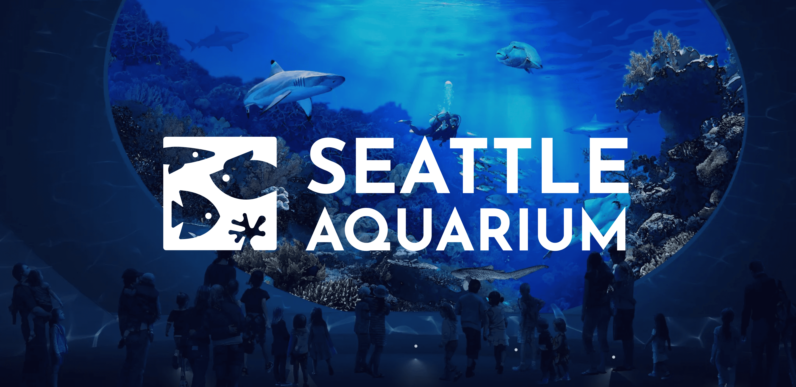
Role
- Visual Designer
Timeline
- April 2026 – June 2026
Team
- Me!
Refreshing the Seattle waterfront's iconic attraction
The Seattle Aquarium offers hands-on marine experiences and conservation education through community programs, drawing over 800,000 visitors annually.
In my HCDE 308 course, I reimagined their existing brand identity to capture the uniqueness of the aquarium and its marine inhabitants.
Final branding preview
Developing and standing by our north star
Analyzing the current Seattle Aquarium brand identity, I developed my guiding Design Intent statement:
The visual identity of the Seattle Aquarium should communicate its commitment to the appreciation and conservation of marine environments and educational efforts to its diverse audience of both Seattle residents and tourists from across the world.
Throughout the process of developing our brand identity, I constantly returned to this north star statement to ensure that my work reflected the standout characteristics that I initially set out to design for.
The Seattle Aquarium: Fun for all ages
Color
The color selections serve to highlight the aquarium's bright and vibrant marine wildlife. The brighter, cooler primary colors are complemented by the muted secondary tones.
Primary
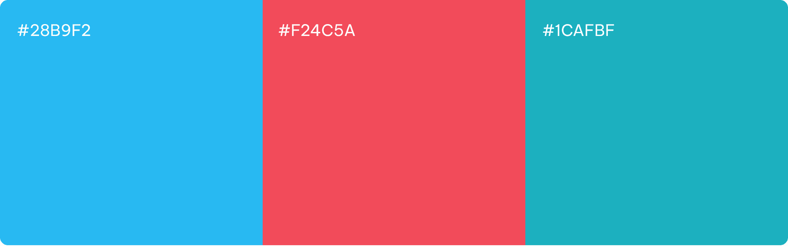
Secondary
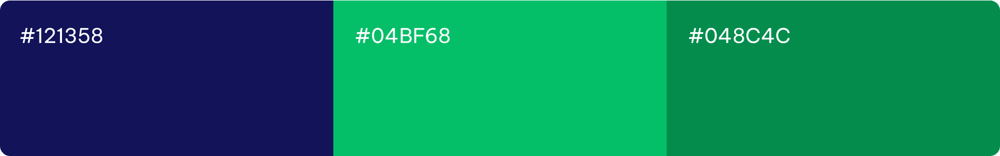
Typography
With the selection, I sought cohesiveness, aiming for the typefaces to have similar characteristics while still retaining their individuality.
Primary
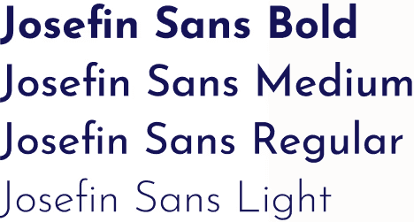
Secondary
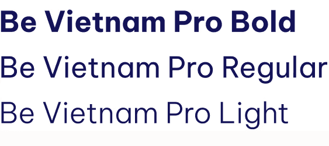
Type hierarchy
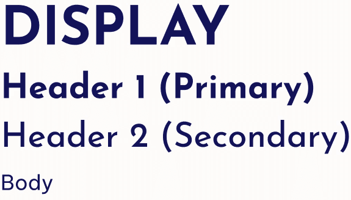
Logos
The logo draws inspiration from the universal experience of peering through the glass enclosure at the fish that lie just beyond.
The design contains fish and marine wildlife from our symbol kit.
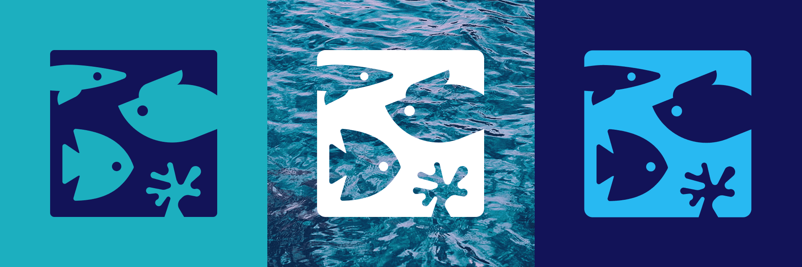
Symbol marks
These playful symbols reflect the wonder that visitors of all ages draw from visiting the Seattle Aquarium.
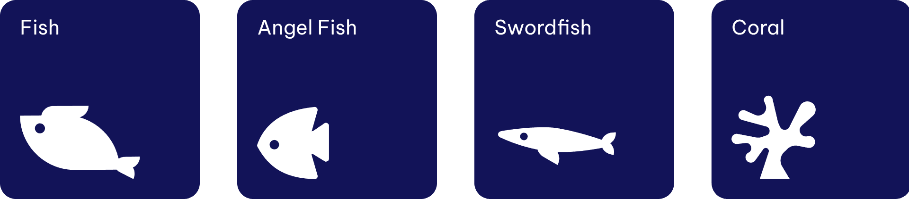
Digital artifact
Using our identity redesign, I reimagined the Seattle Aquarium's Events page, improving the information density, visual hierarchy, and overall brand cohesion to align with our refreshed identity.
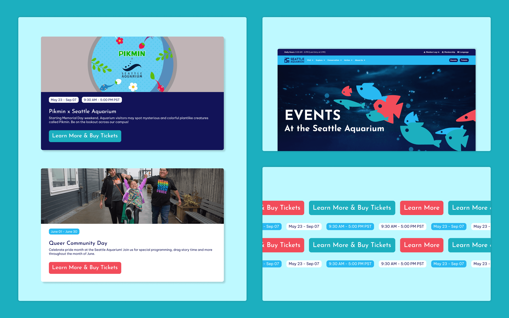
Analog artifact
As a simple keepsake, I designed a ticket that functions as a physical memory and collector's item for both first-time and longtime visitors of the Seattle Aquarium.
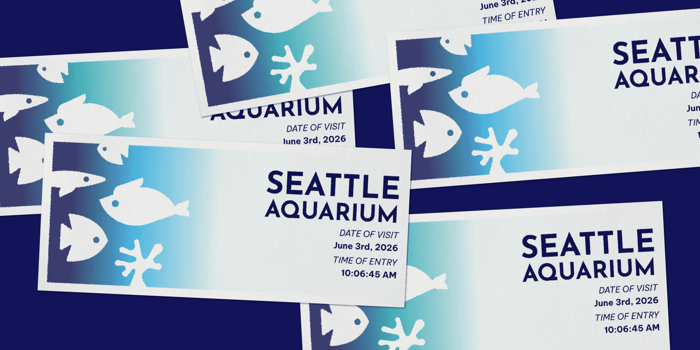
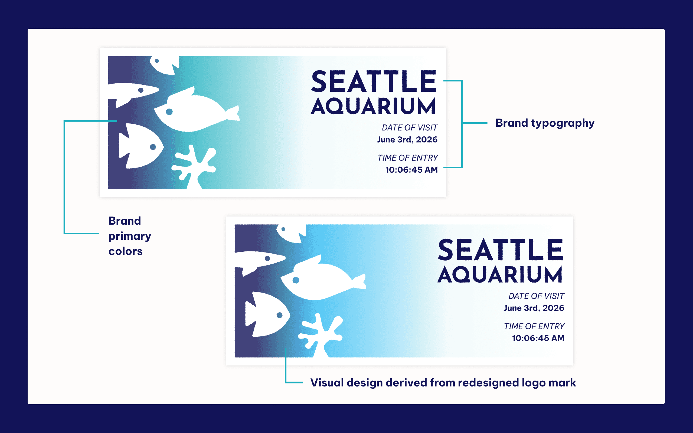
Reflection
Never design without a north star
At first, creating a design intent statement felt like busy work. But throughout endless critique sessions and identity re-designs, I returned to the statement time and time again, asking myself if the newest iteration truly reflected the missions and goals of the institution.
Don't delete, just move on
After passing on hundreds of iterations, I ended up returning to an earlier symbol set for the final identity. Retaining each iteration helped me retrace our creative process and thoroughly evaluate during each stage of the design process.
Having visited the Seattle Aquarium a handful of times, I was excited at the opportunity to focus on this iconic attraction for a brand refresh. Creating an entirely new identity for such an iconic attraction proved to be a challenge, but I found the process to be just as satisfying as the outcome!